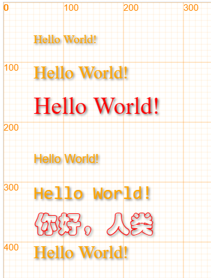

文字¶
字体 font¶
/***************************************************************
font(fontName)
设置字体
* 字体名称：fontName
/***************************************************************/
能够使用的字体是和系统相关的，在不同系统下常见字体如下：
Windows
- 黑体：SimHei
- 宋体：SimSun
- 新宋体：NSimSun
- 仿宋：FangSong
- 楷体：KaiTi
- 仿宋GB2312：FangSongGB2312
- 楷体GB2312：KaiTiGB2312
- 微软雅黑：Microsoft YaHei
Mac Os
- 冬青黑体: Hiragino Sans GB （SNOW LEOPARD开始提供）
- 华文细黑：STHeiti Light （又名STXihei）
- 华文黑体：STHeiti
- 华文楷体：STKaiti
- 华文宋体：STSong
- 华文仿宋：STFangsong
如果安装了Microsoft Office软件，那么还可以使用以下字体
- 隶书：LiSu
- 幼圆：YouYuan
- 华文细黑：STXihei
- 华文楷体：STKaiti
- 华文宋体：STSong
- 华文中宋：STZhongsong
- 华文仿宋：STFangsong
- 方正舒体：FZShuTi
- 方正姚体：FZYaoti
- 华文彩云：STCaiyun
- 华文琥珀：STHupo
- 华文隶书：STLiti
- 华文行楷：STXingkai
- 华文新魏：STXinwei
等宽字体：
- Consolas
写字 text¶
text(src, x, y, *size, *color, *font) : 绘制文本，同样，我们需要x、y来绘制文字的位置
/***************************************************************
* text(string, x, y, *size, *color)
*
* 在画布上写字：
*
* 文字内容：string
* 文字左上角顶点位置为（x,y）
* 文字大小为size，可选参数，默认为20
* 文字颜色为为color，可选参数，默认为 "orange"
***************************************************************/
我们来继续看一些写字例子：
canvas.showAxis();
text("Hello World!", 50, 50);
text("Hello World!", 50, 100, 30);
text("Hello World!", 50, 150, 40, 'red');
// 使用不同的字体
text("Hello World!", 50, 250, 20, null, "Arial");
text("Hello World!", 50, 300, 30, undefined, font="Consolas");
text("你好，人类", 50, 350, 40, 'red', 'STCaiyun');
text("Hello World!", 50, 400, 30);
在这里，我们也能看到不同的字体表现出来的效果差异很大。
